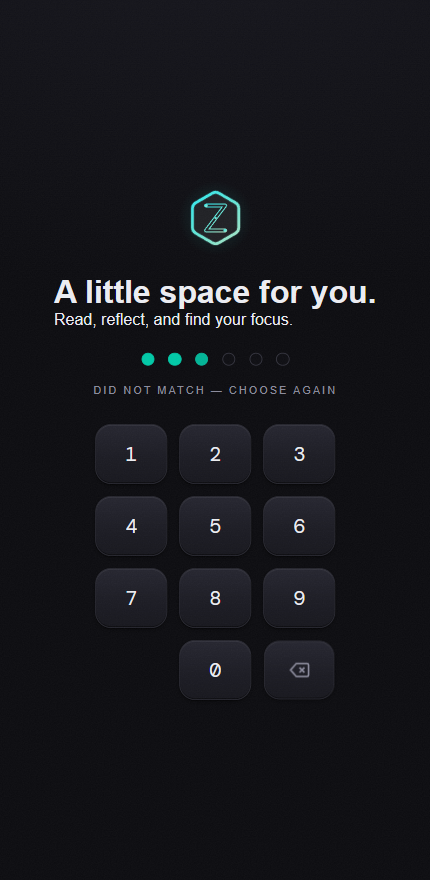

Shipped
Windows + Android
Zyne
A personal reading and focus app. One Tauri codebase, two platforms doing deliberately different jobs — a ranked feed on the phone for consuming, a Pomodoro timer and book-idea library on the laptop for working.
- Shipped a Windows installer and a signed Android APK from the same source
- Offline-first by design — no accounts, no server, no telemetry; data stays on device
- Book ideas extracted from summary feeds by pattern matching, no LLM required; optional Claude ranking layered on top
- Journals written as Obsidian-compatible markdown, so the data outlives the app
Tauri 2RustVanilla JSSQLiteAndroid
